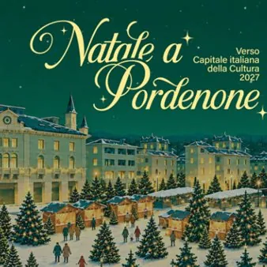

da ven 27 nov a mar 5 gen
La magia del Natale: Natale a Pordenone 2026 - Casette ON AIR
Casette on AIR è il nuovo appuntamento musicale che accompagna l’aperitivo e la convivialità alle Casette di Natale di Pordenone.
 Indicazioni
Indicazioni
- Costi e prenotazioni
- Costo non indicato · Prenotazione non indicata
- Programma
- Programma da verificare. Apri la fonte ufficiale per orari e possibili aggiornamenti.
- In caso di maltempo
- Nessuna indicazione specifica pubblicata.
- Note
- Acquisito automaticamente dalla fonte.
L’EVENTO
Descrizione completa
Casette on AIR è il nuovo appuntamento musicale che accompagna l’aperitivo e la convivialità alle Casette di Natale di Pordenone.
Calendario:
29 novembre - Alla consolle Mookie DJ, protagonista della scena musicale pordenonese, con selezioni che spaziano dalla black music all’acid jazz, dal funk alla disco e alla soulful house: uno stile raffinato e ricco di ritmo.
Per questa serata, le sonorità pop, funk e house si diffonderanno attraverso il nuovo impianto di filodiffusione, creando un’atmosfera musicale avvolgente tra le casette.
4 dicembre - Andrea Santi DJ, una vera garanzia dell'intrattenimento locale, pronto a far vibrare la serata con una selezione musicale a 360 gradi. Preparatevi a un viaggio indimenticabile attraverso generi e decenni, capace di unire i più grandi successi di sempre, ricordi stampati nella memoria e ritmi a cui sarà impossibile resistere.
5 dicembre - Es Vedrà Project, ispirato alla magia mistica dei tramonti di Ibiza, questo progetto propone un viaggio sonoro ricercato che unisce afro house, sonorità organiche e ritmi avvolgenti. Un'esperienza coinvolgente da condividere nota dopo nota.
6 dicembre sarà Daniele B DJ a firmare la colonna sonora dell'aperitivo, pronto a scaldare l'atmosfera dalle ore 18:00 con una selezione musicale studiata per accendere la serata. 8 dicembre - Saverio Pitton costruirà la selezione traccia dopo traccia, lasciandosi ispirare dalle vibrazioni della serata e muovendosi liberamente tra generi diversi.
13 dicembre - Stefano Mango porta a Pordenone un bagaglio artistico unico che unisce l'attività nei club al lavoro in studio di registrazione, muovendosi con classe tra house, dance, techno e chillout. La sua cifra stilistica è arricchita da importanti collaborazioni con pesi massimi della scena internazionale come i Datura e DJ Pippi.
27 dicembre - Brit Box, collettivo nato a Pordenone e profondamente legato alla scena musicale del territorio, dai live al Deposito Giordani fino all'apertura per Bob Geldof & The Boomtown Rats al Pordenone Blues & Co. Festival, il progetto porta in piazza il meglio della cultura Britpop, Indie Rock e Alternative Rock
1° gennaio - Daniele B. Un appuntamento all’insegna dell’allegria per ritrovarsi nuovamente, scambiarsi gli auguri e lasciarsi coinvolgere da una selezione musicale ricca di ritmo.E per coloro che non hanno potuto raggiungerci nella notte di Capodanno, questa è l’occasione ideale per festeggiare alla grande in un’atmosfera accogliente e vibrante, brindando insieme ai nuovi inizi!
3 gennaio - Dinald DJ e la sua selezione raffinata di sonorità house e deep.
5 gennaio - Big Manu DJ
Programma in aggiornamento sul sito Natale a Pordenone
IL PROGRAMMA
Programma e orari
Appuntamenti raccolti dalle fonti elencate. Dove manca un orario, non è ancora disponibile in questa scheda.
Programma pubblicato
- Dal 2026-11-27 al 2027-01-05
INFORMAZIONI UTILI
Prima di partire
- Controllare la fonte prima di partire.
ORGANIZZAZIONE